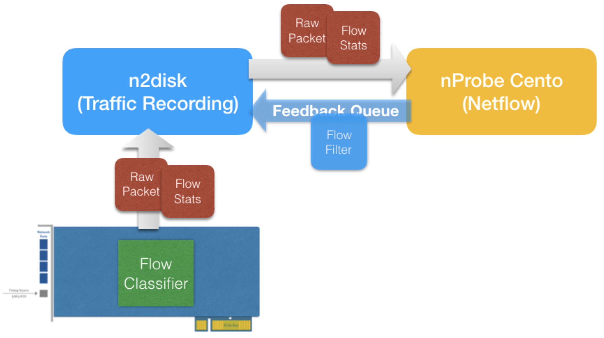

Netflow и необработанная запись
Если вы хотите объединить Netflow и запись необработанного трафика, у вас есть два варианта:
Запустите nProbe Cento для генерации Netflow и перенаправьте необработанный трафик с nProbe Cento на n2disk для записи (рекомендуется, когда скорость записываемого трафика низкая)
Используйте адаптер с возможностями разгрузки потока (например, Accolade) и запустите n2disk для записи трафика, пересылая обновления потока в nProbe Cento для генерации Netflow.
От nProbe Сенто до n2disk
nProbe Cento, 1/10/40/100 Gbit NetFlow/IPFIX зонд, классификатор трафика и накопитель пакетов, напрямую интегрируется с n2disk для генерации Netflow при выборочной записи необработанных данных на диск. И nProbe Cento, и nProbe были разработаны для полного использования ресурсов, предоставляемых многоядерными системами, агрегирования трафика, поступающего из нескольких независимых входных очередей в первой, и распределения обработки пакетов по нескольким ядрам во второй. Допустим, например, что nProbe Cento должен использоваться в качестве экспортера потока для сборщика v9 NetFlow, прослушивающего порт 192.168.2.221 2055, и в то же время должен агрегировать отслеживаемый трафик, полученный из четырех разных очередей eth1, в одну агрегированную выходную очередь. Затем можно выполнить следующую команду
cento-ids -i zc:eth1@[0-3] —aggregated-egress-queue --v9 192.168.2.221:2055
После успешного запуска nProbe Cento выведет идентификатор выходной очереди ZC, который необходимо передать в n2disk, в формате zc:<идентификатор кластера>:<идентификатор очереди>. Предполагая, что nProbe Cento присвоил идентификатор zc:10@0 агрегированной исходящей очереди, можно записать исходящий трафик через n2disk с помощью следующей команды:
n2disk -i zc:10@0 --dump-directory /storage -—max-file-len 1024 --buffer-len 2048 --chunk-len 4096 --reader-cpu-affinity 4 --writer-cpu-affinity 5 --index --index-version 2 --timeline-dir /storage
Где -i zc:10@0 — входная очередь n2disk, то есть выходная очередь nProbe Cento. Пользователь имеет детальный контроль над трафиком, который фактически пересылается в выходную очередь с помощью nProbe Cento, например, чтобы избежать пересылки зашифрованного трафика (например, SSL, HTTPS) на n2disk для записи или пересылать только трафик, поступающий с подозрительного диапазона адресов. В nProbe Cento это реализовано посредством набора правил, которые могут применяться на разных уровнях (для каждой очереди, для каждой подсети, для каждого протокола приложения), заданных с помощью файла конфигурации (опция —egress-conf), соответствующего стандарту INI. Пример:
cento-ids -i zc:eth1@[0-3] --aggregated-egress-queue —egress-conf egress.example --dpi-level 2 --v9 192.168.2.221:2055
Чтобы узнать больше о выходных очередях и конфигурациях агрегатов, обратитесь к Руководству пользователя nProbe Cento.
От n2disk до nProbe Cento с разгрузкой потока
Начиная с PF_RING версии 7.0 и n2disk версии 3.0, можно переложить обработку потока на сетевую карту (на поддерживаемых адаптерах), уменьшая загрузку CPU. Используя разгрузку потока, сетевую карту можно запрограммировать на:
Сохраняйте состояние потока, выполняя классификацию потока в h.
Периодически предоставляйте приложению такую информацию, как хеш, пакеты, байты, временная метка первого/последнего пакета, флаги tcp.
Отбрасывать/обходить/маркировать пакеты потока.
n2disk может записывать необработанные данные во время передачи nProbe Cento обновлений потока. В дополнение к обновлениям потока, когда nDPI включен в nProbe Cento для обнаружения протокола L7, n2disk также может пересылать необработанный трафик, используя очередь обратной связи для шунтирования пакетов потока, как только механизм nDPI обнаруживает протокол.

Используя эту технологию, можно осуществлять запись трафика и генерацию Netflow на высокой скорости на одном и том же устройстве с низким использованием CPU.
Например, если мы хотим запустить n2disk на карте Accolade с поддержкой разгрузки потока и экспортировать обновления потока в nProbe Cento, нам нужно добавить опцию —export-flow-offload, указав идентификатор кластера, который используется для выделения очереди ZC для пересылки обновлений потока и необработанных данных из n2disk в nProbe Cento:
n2disk -i anic:0 -o /storage/n2disk -p 1024 -b 4096 -C 4096 -c 0 -w 1 --disk-limit 80% --export-flow-offload 99
После запуска n2disk мы можем подключить nProbe Cento к очереди ZC для получения обновлений потока, используя zc:<cluster id> в качестве имени интерфейса и добавив опцию —flow-offload:
cento -i zc:99@0 --flow-offload -P /storage/cento